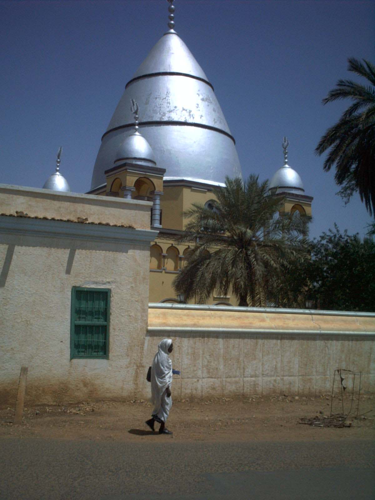

The Mahdi's rebuilt grave - Courtesy: Sven-Steffen Arndt. Licensed under public domain via commons.
The puritanical rhetoric of the Mahdi and his "dervishes" in Hammour Ziada's tragic epic on the rise of the Mahdiyya in 19th-century Sudan is uncomfortably reminiscent of statements released by the Islamic State. Throughout his second novel Ziada depicts murderous zeal, ruthless destruction of "Western"-style civilization, and spectacular displays of violence. Perhaps if the Mahdi was alive today, he would release videos of elaborate beheadings and amputations the same way the Islamic State does.
The love affair spans two decades of Egyptian and Sudanese history, specifically through the Mahdi rebellion (1881-1885) that ensued after the Mahdi (Mohamed Ahmed) proclaimed himself the messianic redeemer of the Islamic faith, and the subsequent formation of the Mahdi state (1885-1898). The fascinating tragedy unravels through hypnotic story-telling over 400 plus pages and dozens of characters and subplots.
Ziada, who is a journalist as well as a novelist and short story writer, writes a beautiful historical survey of his country and its cities. Of how the cosmopolitan Khartoum was established by Korshid Pasha in 1830, with its beautiful palaces and gardens. Of the fearsome port of Sawkin, the one the jinn of prophet Soliman inhabited until they were driven underground by human settlers. And of the city of the Mahdi, Omdurman, with its red earth and desolate atmosphere of religious fervor. Even the far western mountains and the region's strange tongue receive a mention, via the former slave Bikhit, who originally comes from there.
The turbulent waters of the Nile and its many tributaries take cue from the protagonists as they twist and turn through the immense landscape of Sudan, at times treacherous and terrifying, at others docile and picturesque. In painting a portrait of early modern Sudan with its cities, ports and diverse inhabitants, Ziada rouses the curiosity of the reader (specifically perhaps the Egyptian reader) to challenge his or her assumptions and ideas about Sudan and its history, in a way that is as riveting as it is informative.
He does not shrug off some of the darkest aspects of war and Sudanese history. He goes into detail about the role of the Arabs and Turks in entrenching slavery as an economic practice and inevitably a caste system entirely pivoted on "color," and further the impact of British colonialism in bringing to Sudan the "white" heathens who defiled the land with their presence and ways of life. Ziada exemplifies this injustice through many aspects of the plot, for example the sexual exploitation of slaves (Bikhit is sexually exploited by his white European master and then his Turkish mistress), the violence enacted against darker inhabitants, the exorbitant taxes, the unjust punitive system, slave labor, and so on. The inevitable outcome from the Turko-Egyptian and British administrations was widespread injustice and inequality — and the eventual rise of the messianic movement of the Mahdi.
The Mahdi rebellion, which witnesses the exhilarating defeat of the combined forces of the Egyptian, Turkish and British troops, also sees a much darker side. The siege of Khartoum, the famine it caused (including a story of infant cannibalism), the mass killings of white Christians and the imprisonment or enslavement of those who remained are all at the heart of the history Ziada tries to capture.
He tries to offer a balanced view of those deeply polarizing views. We hear the story of how the "dervishes" who supported the Mahdi saw the events, and at the same time we see how the white European Christians – through the perspective of the missionary, Theodora – saw the Mahdi and his followers. Both sides come across as morally corrupt, unprincipled, heartless savages. Theodora, the nymph-like, devout Christian and the object of Bikhit's adoration, comes across as racist, petty and hypocritical, along with much of her race. It would seem as if love should triumph somehow – or this is what Ziada keeps hinting at.
With a Muslim black slave falling in love with the white Christian missionary, Ziada walks a fine line between facile interracial eroticism and an actual engagement with Sufi ideas about radical equality, the impossibility of knowing the other, and the omnipotence of love. To the detriment of his endeavour, he does not always succeed in showing us how these liberating Sufi tenets can reshape our understanding of encounters like the one his protagonists go through.
I was reminded of Egyptian scholar and novelist Youssef Zeidan failing unceremoniously to revolutionize our understanding of modes of human relatedness via the progressive potential of many of those Sufi ideals in Mohal (2012), instead slipping into superficial cliches and unhappy excuses to write bad sex scenes.
Throughout the novel, Ziada clearly attempts to recreate the effect mystical prose has on the reader, with the multiplicity of meanings each word may have and how each meaning can reveal just one facet of the truth. But he slips into a didactic tone every now and then, via his protagonists, preaching rather than wondering or asking us to wonder. And here lies one of the biggest challenges of contemporary Arab literature: tackling the legacy of mystical writing without slipping into an edifying or sermonic tone.
Ziada picks an unlikely couple to fall in love, and through the historical context of early modern Sudan he tells a tale of savage religiosity, ugly imperialism, misogyny, racial violence and ecstatic madness. If the novel, which won last year's Naguib Mahfouz Medal for Literature in 2014 and was shortlisted for this year's International Prize for Arabic Fiction and should soon appear in English, should be called out for its superficial dabbling with Sufism and mysticism and a problematic premise of a love story, it cannot be faulted for his masterful storytelling, which remains spellbinding till the very end.